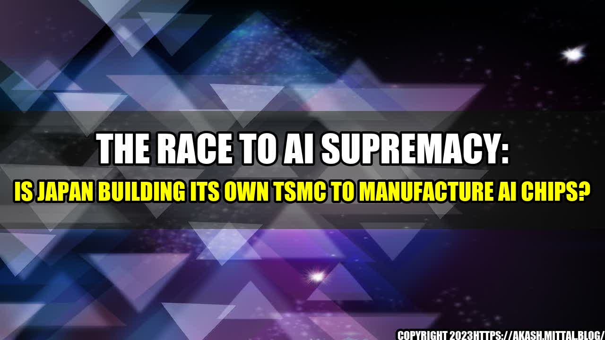

The Race to AI Supremacy: Is Japan Building Its Own TSMC to Manufacture AI Chips?
Once upon a time in Japan, there was a man who dreamed of creating the world's most powerful AI chip. This man was Masayoshi Son, the CEO of Softbank, one of the largest technology conglomerates in the world. Son's vision was to revolutionize the world with AI, and to realize that vision, he needed to build a chip that could process massive amounts of data at lightning speed.
Softbank invested billions of dollars in AI-related companies such as ARM Holdings, Boston Dynamics, and Nvidia, but Son knew that for Japan to truly become a leader in AI, it needed to have its own chip manufacturing capability. This led to the birth of the project "Japan Foundry Association," a group of companies and research institutions working together to establish a domestic chip manufacturing industry for AI.

Fast forward to today, and Japan's quest for AI supremacy has taken a new turn with reports indicating that the country is planning to build its own TSMC (Taiwan Semiconductor Manufacturing Company), one of the largest chip foundries in the world. TSMC is responsible for manufacturing chips for tech giants such as Apple, AMD, and Qualcomm, and its chips power most of the world's electronics. By building its own TSMC, Japan hopes to have greater control over the supply of AI chips and stake its claim as an AI powerhouse.
Quantifying the Potential of Japan's AI Chip Industry
Japan's AI industry has been growing rapidly, with the market expected to reach $34 billion by 2024, according to MarketsandMarkets. However, the industry is heavily reliant on imports, with most of the AI chips used in Japan coming from the US and China. By building its own TSMC, Japan hopes to reduce its dependence on foreign countries and have greater control over its supply chain.
The potential impact of Japan's domestic chip manufacturing industry on the global AI market is significant. According to a report by PwC, the global AI market is expected to reach $15.7 trillion by 2030, with AI chips accounting for a significant portion of that growth. If Japan is successful in building its own TSMC, it could become a major player in the AI chip market and potentially even challenge the dominance of TSMC and other chip foundries.
The Challenges Ahead for Japan's AI Chip Industry
Building a chip foundry from scratch is no easy feat, and Japan will face significant challenges in its quest to become an AI chip manufacturing powerhouse. One of the biggest challenges is the sheer amount of capital required to set up a foundry. TSMC, for example, spent over $1 billion to build its first fab, and the company now spends billions each year to maintain and upgrade its facilities.
Another challenge is the shortage of skilled workers in the semiconductor industry. Japan's semiconductor industry has been in decline for years, and many of the country's top engineers and designers have left the industry to pursue other careers. Building a world-class chip foundry requires a highly skilled workforce, and Japan will need to attract and train new talent to fill the skills gap.
Conclusion
- Japan's plan to build its own TSMC is a bold move that could potentially position the country as a major player in the AI chip market.
- However, the challenges Japan faces in building a chip foundry from scratch are significant, and the success of the project is far from guaranteed.
- Ultimately, the success of Japan's AI chip industry will depend on its ability to attract and retain top talent, secure funding, and overcome the technical challenges involved in building a chip foundry that can compete with the best in the world.
References
- https://www.fool.com/investing/2021/06/11/is-japan-building-its-own-tsmc-to-manufacture-ai-c/
- https://www.marketsandmarkets.com/PressReleases/artificial-intelligence-ai.asp
- https://www.pwc.com/gx/en/issues/analytics/assets/pwc-ai-analysis-sizing-the-prize-report.pdf
Hashtags
- #AIChips
- #JapanAI
- #ChipFoundry
- #Softbank
Category
Technology
Curated by Team Akash.Mittal.Blog
Share on Twitter Share on LinkedIn